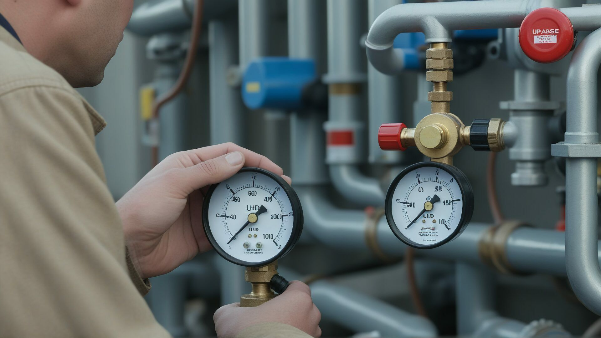

Qualität
TÜV-geprüfte Qualität garantiert
Als TÜV-geprüfter Schornsteinfegermeister garantieren wir höchste Qualitätsstandards


Professionelle Überprüfung Ihrer Gasinstallationen für maximale Sicherheit
Sicherheit
Gas ist ein komfortabler und effizienter Energieträger – aber nur, wenn alle Installationen einwandfrei funktionieren. Undichte Gasleitungen oder defekte Sicherheitseinrichtungen können zu gefährlichen Situationen führen.
Die regelmäßige Gashausschau ist daher nicht nur gesetzlich vorgeschrieben, sondern ein wichtiger Beitrag zu Ihrer Sicherheit.
Unfälle lassen sich vermeiden – durch regelmäßige, professionelle Überprüfung!
Termin anfragenUnser Angebot
Kontrolle aller frei verlegten Erdgasleitungen auf Beschädigungen, Korrosion und ordnungsgemäße Verlegung.
Funktionskontrolle aller Absperrhähne und Sicherheitsventile für maximale Sicherheit.
Überprüfung der ausreichenden Belüftung für alle Gasgeräte in Ihrem Haushalt.
Technische Kontrolle der Leitungsbelastung und Kapazität für sicheren Betrieb.
Prüfung der fachgerechten Befestigung aller Gasleitungen gemäß den Vorschriften.
Ausführliche Dokumentation aller Befunde mit professionellem Prüfprotokoll.
Ihre Vorteile
Schutz vor Gasunfällen durch frühzeitiges Erkennen von Mängeln und Gefahrenquellen.
Kleinere Probleme werden erkannt, bevor sie zu kostspieligen Schäden führen.
Ausführliches Prüfprotokoll mit detaillierter Dokumentation aller Befunde.
Durch rechtzeitige Wartung sparen Sie teure Notfallreparaturen und Folgeschäden.
Qualität
Als TÜV-geprüfter Schornsteinfegermeister garantieren wir höchste Qualitätsstandards
Vereinbaren Sie jetzt einen Termin für Ihre Gashausschau und sorgen Sie für die Sicherheit Ihrer Familie und Ihres Eigentums.